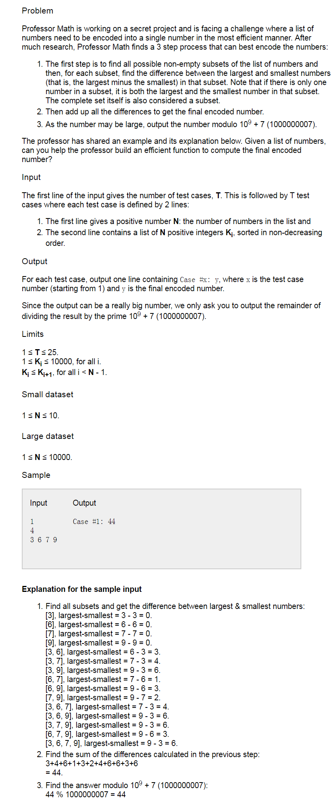
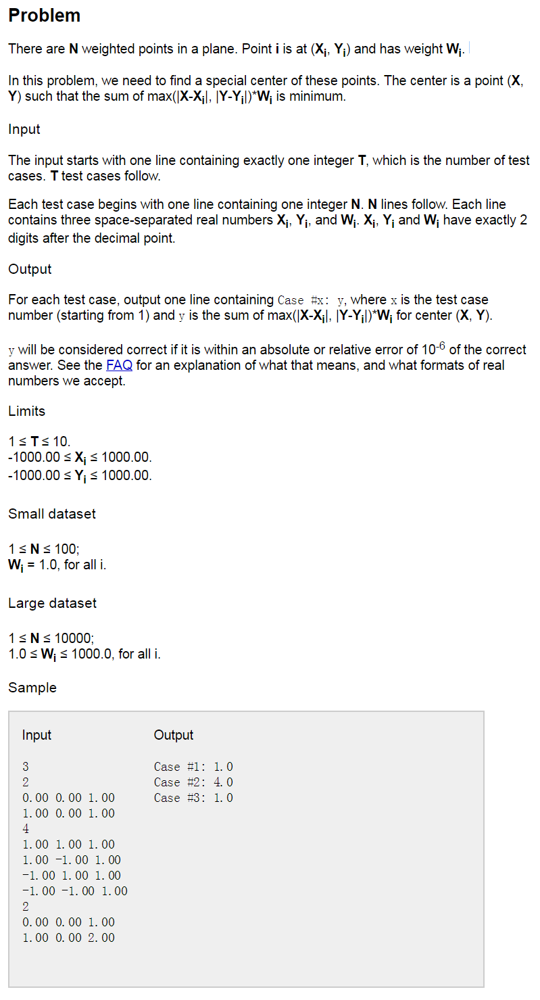

谷歌codejam:https://codejam.withgoogle.com/codejam/contest/11304486/dashboard.
problem A

小规模测试文件：https://drive.google.com/open?id=0B2aHWGYn_JL-WFhaWVMxaXpxWVk
大规模测试文件：https://drive.google.com/open?id=0B2aHWGYn_JL-X1BoUlUzZFptQzQ
因为给出的序列是有序的，我们用i表示开始的元素，用j表示结束的元素，比如对于例子[3,6,7,9]来说，i=0,j=2表示以3开始，以7结束的属于[3,6,7,9]的子集的数量，所有这样的子集都有相同的差值7-3=4,所以差值乘以数量就是结果。
现在问题的关键就是以i开头的，j结尾的子集的数量的确定。 先来
看[3,6]，只有[3,6], 1个
看[3,7]，有[3,7],[3,6,7]; 2个
看[3,9], 有[3,9],[3,6,9],[3,7,9],[3,6,7,9]； 4个
看[6,7],有[6,7]; 1个
看[6,9],有[6,7],[6,7,9]; 2个。
我们发现，子集的数量只与i和j的距离有关系。此关系是$2^{j-i-1}$
利用这个规律，我们可以简单的编写一下程序计算结果：假设一个实例数据存储在v[]中。num是v的长度。sum=0;1
2
3
4
5
6for(int i=0;i<num;i++){
for(int j=i+1;j<num;j++){
sum = (sum + ( (v[i]-v[j]) * 2^[j-i-1] ) % mod ) % mod;
}
}
cout<<sum<<endl;
仔细观察上面的代码，我们发现每次都要计算$2^i$,这是一个耗时的操作，尤其是当i很大的时候。我们可以事先计算出所有需要的值存储在一个数组中，这样只需要计算一次就可以了。那么我们需要计算到2的多少次方呢？我们查看最大的那组的数据规模，发现N最大是10000，所以只要稍微大于10000就可以了。这里设置maxn = 10005;
1 | const int maxn = 10005; |
我们对比一下优化前后的运行时间：1
2
3
4
5
6
7
8
9
10
11
12
13
14
15
16
17
18
19
20
21
22
23
24
25
26long long two_n(long long n){
long long ret = 1;
for(long long i=0;i<n;i++){
ret = (ret * 2 ) % mod;
}
return ret;
}
int main(){
long long p[maxn];
auto start_time = clock();
p[0]=1;
for(int i=1; i<maxn; i++){
p[i]=p[i-1]*2 % mod;
}
auto end_time = clock();
cout<<end_time - start_time <<endl;
long long q[maxn];
auto s = clock();
long double two = 2.0;
for(int i=0;i<maxn;i++){
q[i] = two_n(i);
}
auto e = clock();
cout<< e - s <<endl;
return 0;
在maxn=10005的情况下，输出是0，363. 单位是毫秒。
可以看到，这个差距还是相当大的，maxn越大，越明显。
这样的时间复杂度其实已经可以解决这个问题了。
完整的代码：
1 |
|
这里还有另外一个版本的代码，貌似效率更高一些，但是还不是很明白原理：
1 |
|
problem B

1 |
|